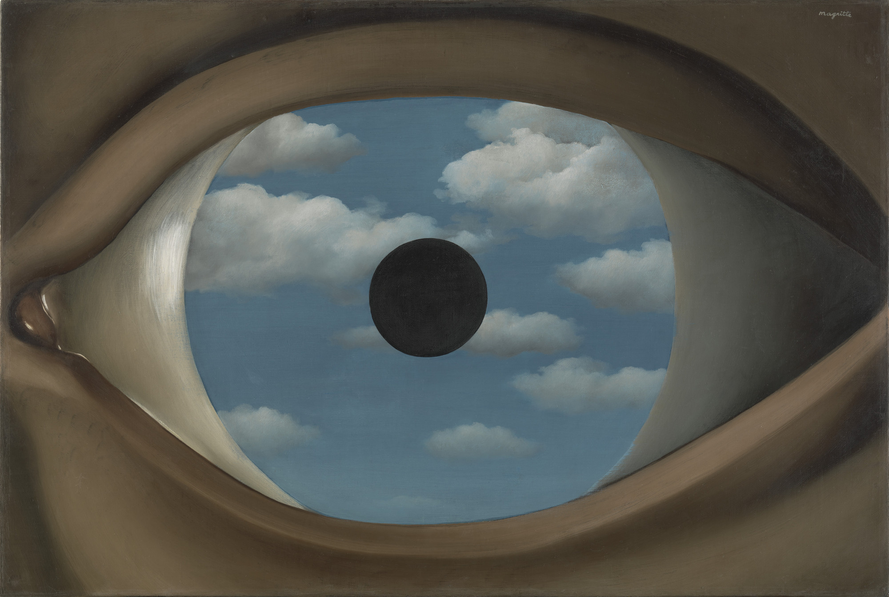
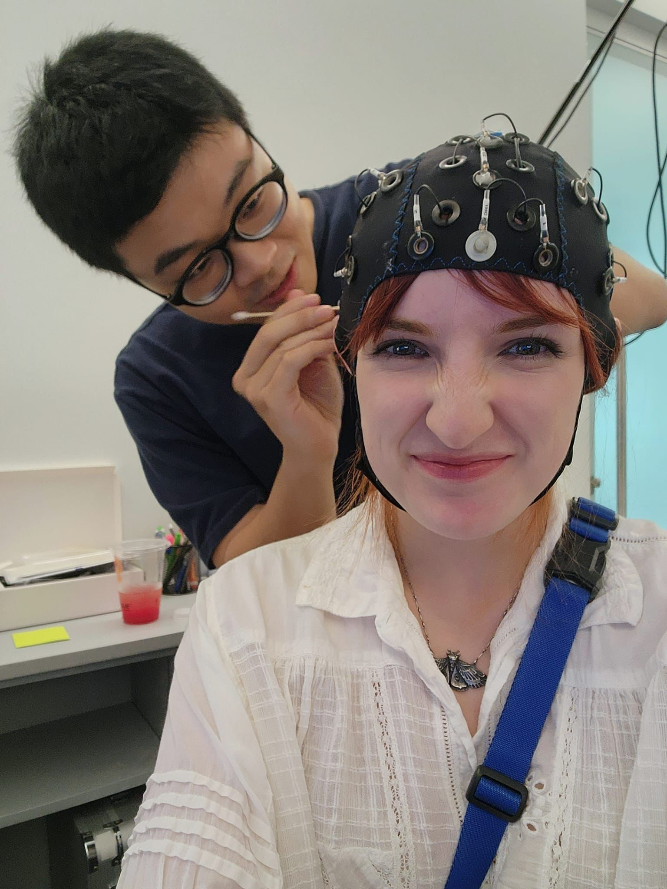

What is reality?
Perception
Your brain builds reality. Illusions show how.
Which orange circle is bigger?
Neither. They are the same size.
AI & beliefs
Would art move you less if an AI made it?
Human
Body & emotions
How your heartbeat shapes what you believe

In the lab
We record the brain and the body
EEGHeart rateSkin conductance
Brain stimulation
…and try to directly stimulate the brain
TMS
Metascience
We stand on the shoulders of giants, and try to push further
and ten alumni, and counting
Lab life
Conferences, beaches & lab dinners
Curious?

realitybendinglab.com